Aridagawa, Wakayama: things to do, food and stays
Aridagawa · Wakayama
Aridagawa
Highlighted on the Wakayama map.
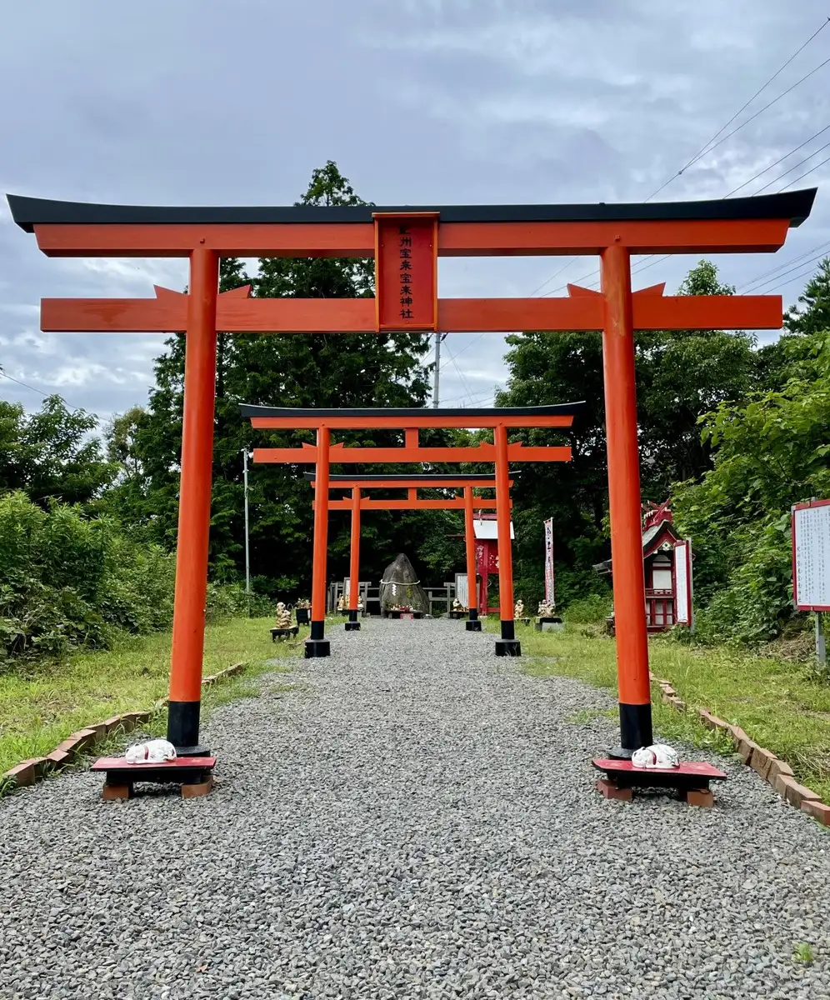
Stay
TADONO the bedroom
TADONO the bedroom
HIGHLAND VIEW
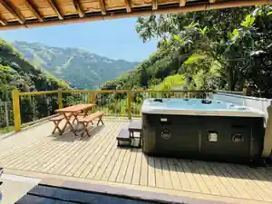
HIGHLAND VIEW
Inn in Shoseki, Aridagawa with scenic views.
笠松亭
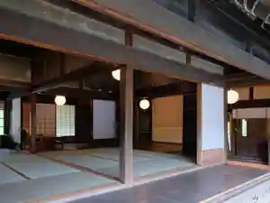
Kasamatsu Tei
Inn in Shimizu, Aridagawa with a renovated traditional house.
しみず温泉あさぎり
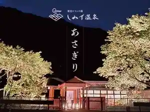
Shimizu Onsen Asagiri
Inn at Shimizu Onsen in Shimizu, Aridagawa.
W.A.S riverside nature terrace 星降るテラス
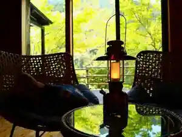
W. A. S riverside nature terrace Hoshifuru Terrace
Inn in Shimizu, Aridagawa with open-air baths.
Dining
麺dining 月乃家
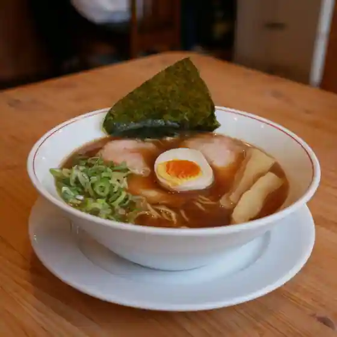
Men dining Gatsu No Ie
ナチュラルガーデン
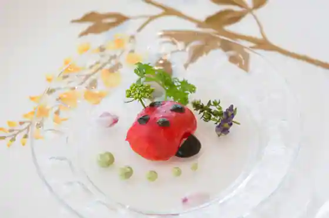
Nachuraru Garden
海鮮食堂つなや 有田川店
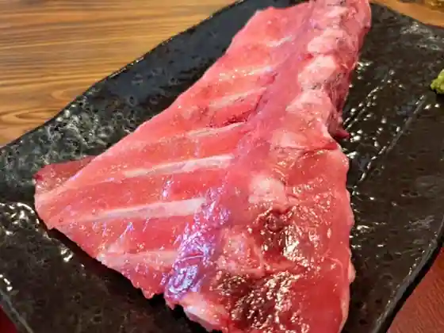
Kaisen Shokudo Tsunaya Aridagawa
しらす屋ゆあさ湾 則種
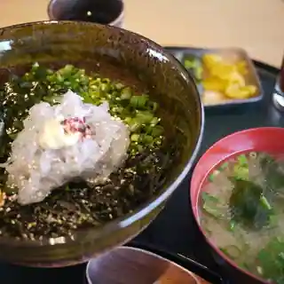
Shirasu Ya Yuasa Wan Nori Tane
赤玉
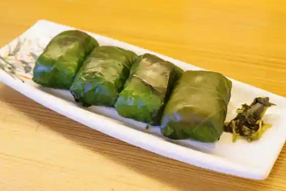
Akadama
達人村喫茶山ぼうし
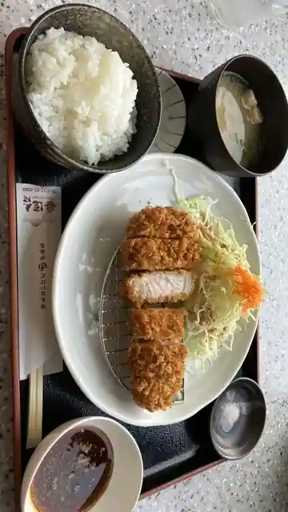
Tatsujin Mura Kissa Yama Boshi
ゴールデンリバー
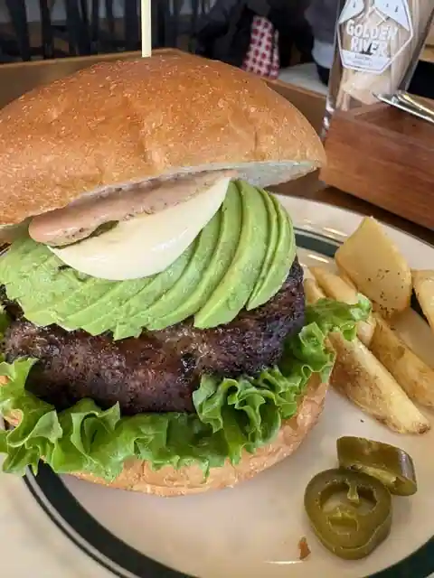
Gorudenriba
ブルー
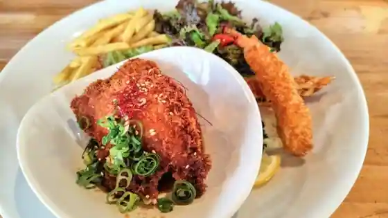
Buru
ベッカライ ビス・バルト
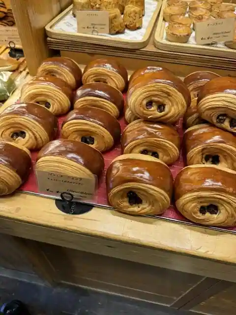
Bekkarai Bisu Baruto
デッキ カフェ @ Arida
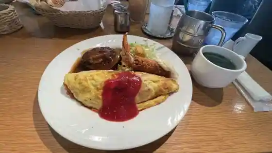
Dekki Cafe @ Arida
道の駅 明恵ふるさと館
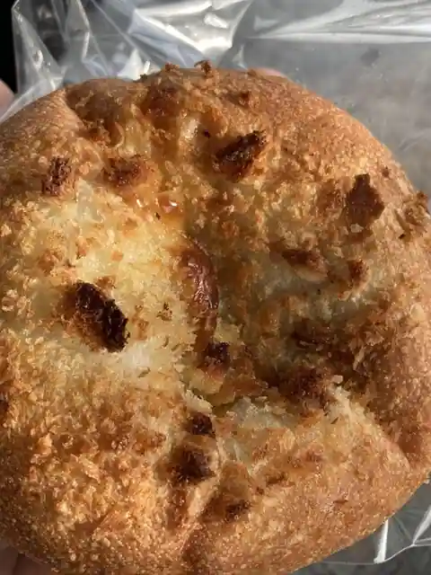
Michi No Eki Akie Furusato Kan
kado
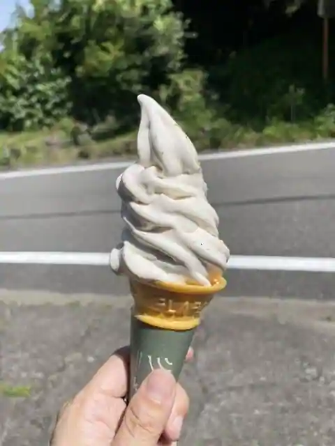
kado
吉備湯浅パーキングエリア（上り線） スナックコーナー・フードコート
Kibi Yuasa Pakingueria (Nobori Sen) Sunakkukona Fudokoto
焼肉三国一EX 有田川店
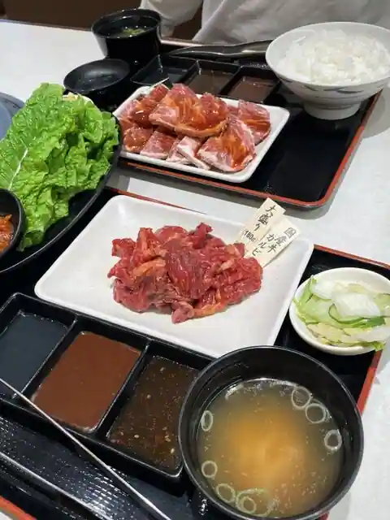
Yakiniku Mikuni Ichi EX Aridagawa
九沓
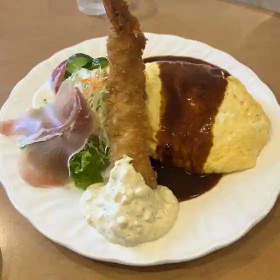
Kyu Kutsu
道の駅 しらまの里
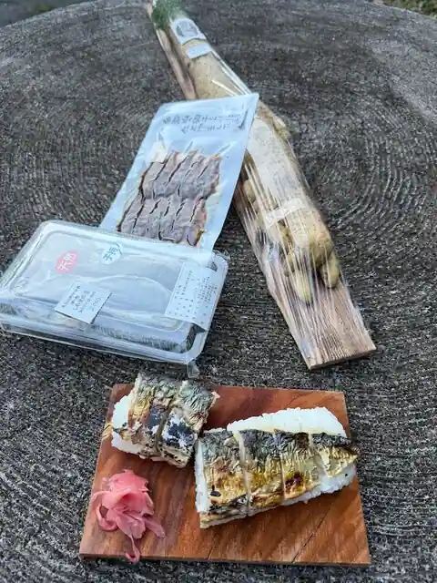
Michi No Eki Shiramano Sato
かなや明恵峡温泉 お食事処
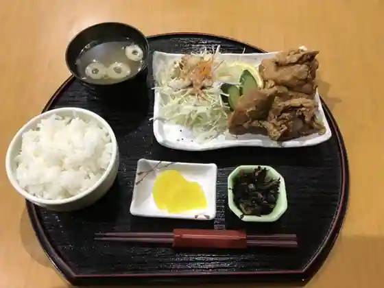
Kanaya Akie Kyo Onsen O Shokuji Tokoro
三軒屋 和楽
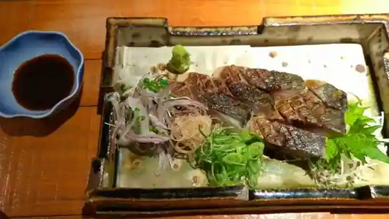
Sanken Ya Wagaku
ひとりじめ狸本舗
Hitorijime Tanuki Honpo
カフェアンドレスト バグダッド
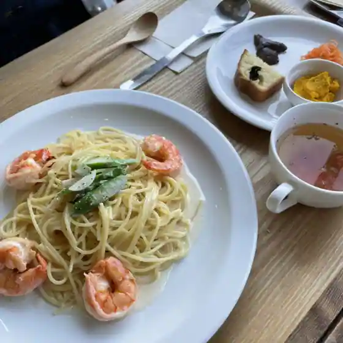
Cafe Andoresuto Bagudaddo
マンサダパン日和
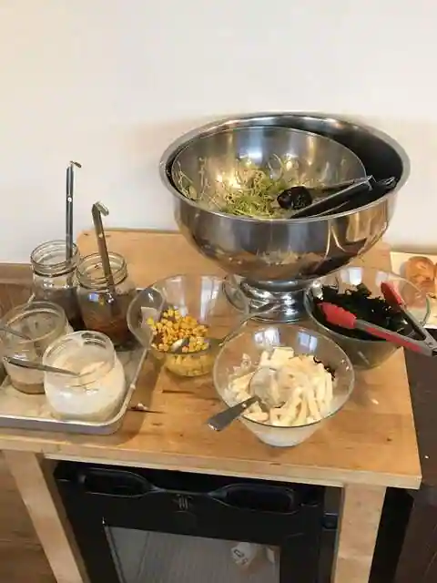
Mansada Bakery Hiyori
鈴明 かなや明恵峡温泉店
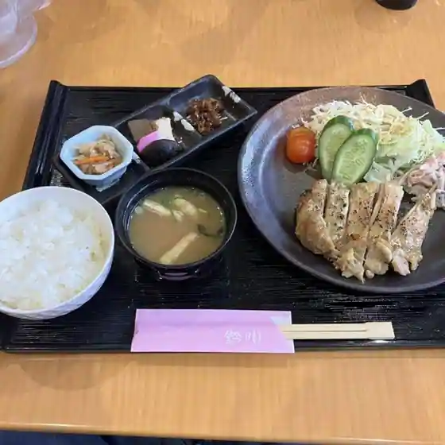
Suzu Mei Kanaya Akie Kyo Onsen
ピザ食堂 rita
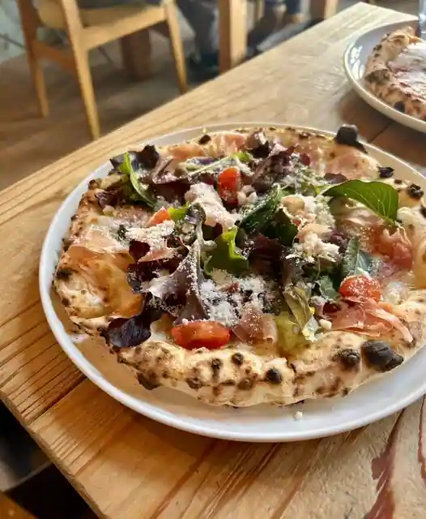
Pizza Shokudo rita
中華レストラン のりちゃん
Chuka Restaurant Norichan
Sights
Washigamine Kosumosu Park
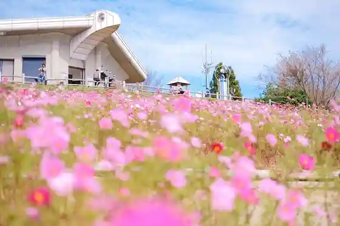
Aragi Shima
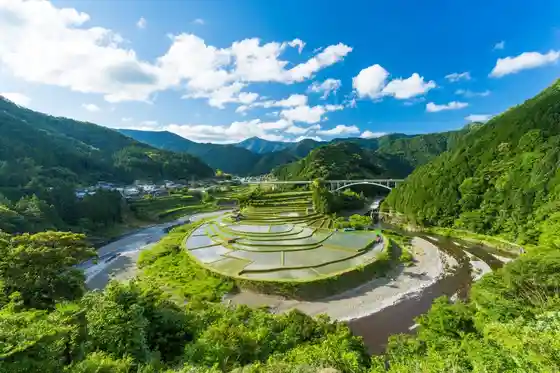
Kanaya Akie Kyo Onsen
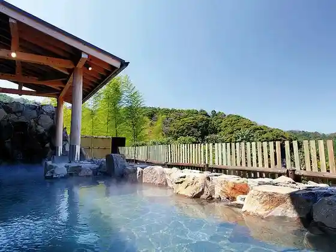
Oku Kuri Hiroi Farm
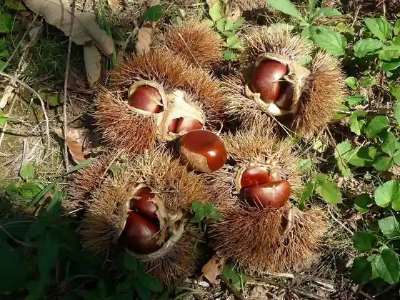
Aridagawa Tetsudo Park Aridagawa Tetsudo Koryu Kan
Zao Hashi (Tsukodome Me Naka)
Roadside Station Aragi Village
Aridagawa Chiiki Koryu Center (ALEC)
Roadside Station Akie Furusato Kan
Fujioka Farm Mikan Kari
Budo Kari / Arida Kyoho Village
Hana no Sato River Park Campground (GOLDENRIVER THE FIELD)
Shimizu Onsen
Experience Koryu Kobo Warashi
Kishu Horai Horai Shrine
Shoseki Shrine
Roadside Station Shirama Village
Mikan no Oka
Roadside Station Shimizu
THE BASE CAMP ARIDAGAWA (Aridagawa Tourist Information)
Poppo Michi
Tsugi Falls
Mokko Experience / Mokko Nado Taiken Center
Poppo Ehon Kan (Chiisana Eki Art Museum)
Fureai no Oka Oto Campground
Megumi Murasaki Sono Ajisai no Migoro
Yukawa Gorge (Sagari Taki)
Taguchi Sabo Park (Hotaru)
Kishu Yoshida Fuji (Arida Kyoho Village no Fujidana)
Kyu Kasamatsu Ie House (Hitomune Kashikiri no Ko Minka Yado (Kasamatsu Tei))
Ame Suzu Tera Amida Do
Ubagataki
Ao no Gan
Kokuzo Falls (Kuro Kura Falls)
Akie no Sato Supotsu Park
Dondon Plaza
Kasamatsu Hidari Tayu Shotoku Hi
Ue Yukawa Tonneru
Ue Yu Yosui Michi
Konpira Gongen Sha
Zao Gongen Sha
Nishihara Kannon Do
Matsuba Kannon Do